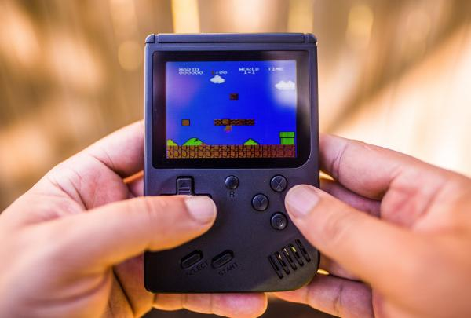

Cloud Gaming: Services like Google Stadia, Microsoft xCloud, and NVIDIA GeForce Now were making strides in providing high-quality gaming experiences streamed directly to devices, reducing the need for high-end hardware.Cloud gaming represents a paradigm shift in the gaming industry, offering players unprecedented flexibility and accessibility to high-quality gaming experiences without the need for expensive hardware upgrades. Services like Google Stadia, Microsoft xCloud, and NVIDIA GeForce Now leverage the power of cloud computing to stream games directly to a variety of devices, from smartphones to low-end PCs, eliminating the barriers of hardware limitations. This democratization of gaming not only expands the potential audience but also opens new avenues for innovation in game development and distribution. Additionally, cloud gaming enables seamless cross-platform play and instant access to a vast library of titles, transforming how players engage with games and fostering a more inclusive gaming community. However, challenges such as latency, internet connectivity, and pricing models still need to be addressed to fully realize the transformative potential of cloud gaming and ensure a smooth transition for players and developers alike.
Virtual Reality (VR) and Augmented Reality (AR): VR gaming was becoming more immersive with advancements in hardware like the Oculus Rift, HTC Vive, and PlayStation VR. AR gaming, particularly through mobile devices, was also growing, with games like Pokémon GO leading the way.
Ray Tracing and Real-time Graphics: Ray tracing technology was revolutionizing gaming graphics, offering more realistic lighting, reflections, and shadows. This trend was supported by hardware advancements from NVIDIA and AMD.
Artificial Intelligence (AI) in Gaming: AI was being increasingly utilized in gaming for various purposes, including NPC behavior, procedural content generation, and player analytics.
Blockchain and NFTs in Gaming: While still in its infancy, blockchain technology and non-fungible tokens (NFTs) were starting to make an impact in gaming, enabling true ownership of in-game assets and new monetization models.

Cross-Platform Gaming: The trend of cross-platform gaming was gaining momentum, allowing players on different devices to play together seamlessly. Games like Fortnite and Rocket League were leading the way in this regard.

Subscription Gaming Services: Subscription-based gaming services, such as Xbox Game Pass and PlayStation Now, were becoming increasingly popular, offering access to a library of games for a monthly fee.
Esports and Streaming: Esports continued to grow in popularity, with professional gaming tournaments attracting large audiences both online and offline. Streaming platforms like Twitch and YouTube Gaming played a significant role in this ecosystem.

Accessibility in Gaming: There was a growing emphasis on making games more accessible to players with disabilities, with features like customizable controls, subtitles, and assistive technologies becoming more prevalent.

Indie and Retro Gaming: Indie games and retro-inspired titles were thriving, offering unique experiences that appealed to nostalgia as well as innovation. 
Certainly, the evolution of gaming technology is a significant matter with far-reaching implications for entertainment, technology, and society as a whole. Here's a broad conclusion encapsulating its importance: The intersection of gaming and technology represents a dynamic fusion that continually pushes the boundaries of human imagination, creativity, and innovation. From the advent of cloud gaming to the rise of immersive experiences through virtual reality and augmented reality, gaming technology has not only transformed how we play but also how we interact, learn, and connect with others in an increasingly digital world. Moreover, the integration of artificial intelligence, blockchain, and subscription services has revolutionized business models, player experiences, and even notions of ownership within the gaming ecosystem. As gaming technology continues to advance, it serves as a catalyst for progress across diverse domains, including hardware development, software engineering, user experience design, and even societal attitudes towards leisure and recreation. Moreover, the inclusive nature of gaming, coupled with its ability to transcend geographical boundaries and cultural barriers, fosters a global community of players, creators, and enthusiasts united by their passion for interactive entertainment.